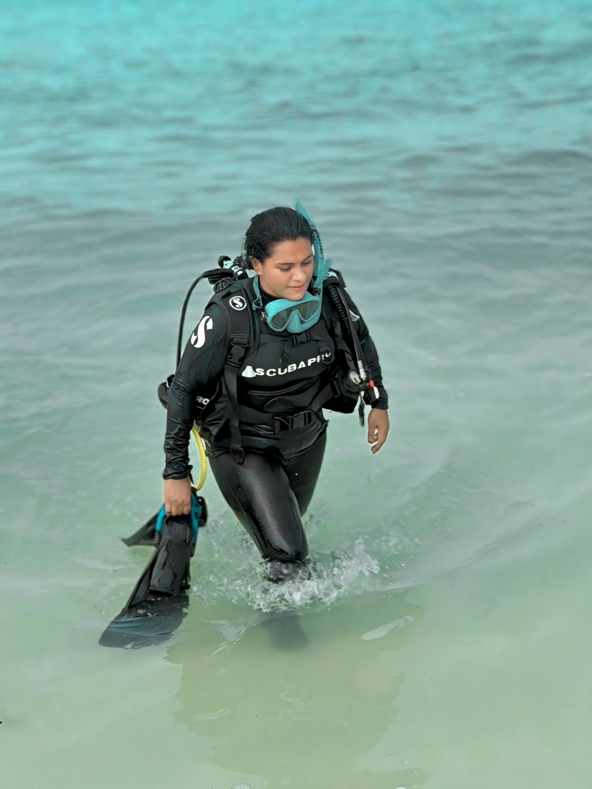
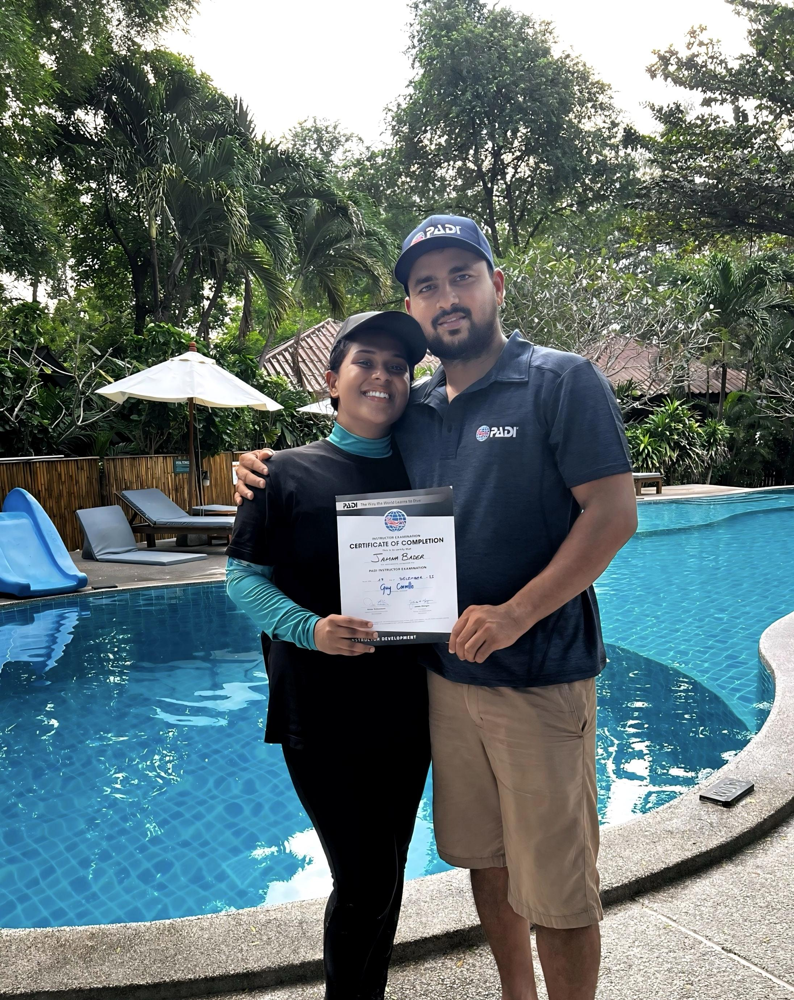

The blue waters of Lakshadweep have always shaped island life. Fishing, swimming, and boat travel are part of the daily routine. Yet for many years, scuba diving remained a rare skill, practiced mostly by men. That changed with the rise of Jamna Bader, who became the first female PADI scuba diving instructor from Lakshadweep. Born and raised in Lakshadweep, where she has lived all her life, Jamna grew up with a deep connection to the sea. Her journey shows how courage and training can open new paths for island women.
Jamna’s story is not only about learning to dive. It is about changing mindsets, building professional skills, and inspiring women across the islands and beyond to take up scuba diving. Today, she stands as a symbol of lady scuba diver in lakshadweep and a strong voice for women in Lakshadweep’s diving community, encouraging more girls to explore the ocean not just as swimmers, but as skilled professionals beneath the waves.

From Island Girl to Ocean Explorer
Jamna was born and raised in Lakshadweep, growing up like other island girls, surrounded by the sea but knowing little about scuba diving. Swimming and daily life near the ocean were normal for her, yet scuba diving felt like something far away and meant only for men. Like many girls in Lakshadweep, she chose a stable path and became a teacher. Her work in teaching helped her develop confidence, patience, and a strong sense of responsibility. It also shaped her belief that learning could change lives—including her own.
After her marriage, her life took a new direction. Her husband, Jamaludheen, was already a famous scuba diving instructor in Lakshadweep; he change her life from teacher to best lady scuba diver in Lakshdweep. Watching his work closely and understanding the discipline and skill behind it opened a new world for her. Slowly, she became more connected to diving and felt inspired to learn something she had never imagined for herself.
Jamna began with basic swimming and water safety training from her husband and gradually moved on to scuba diving skills. She learned how to breathe calmly underwater, how to control her movements, and how to dive without harming coral reefs. What started as simple training soon became her profession. With dedication and continuous practice, she earned her certification and made history as Jamna Bader, the first female PADI scuba diving instructor from Lakshadweep.
Her journey is not just about diving into the sea—it is about breaking social barriers and creating new opportunities for island women. Today, Jamna stands as a symbol of courage and learning, encouraging women in Lakshadweep and beyond to see scuba diving not as a distant dream, but as a real and achievable profession.
Choosing a Different Path
For many island women, career choices were limited, and Jamna also began her life with those same boundaries. But once she discovered scuba diving, it awakened a deep passion within her. The ocean was no longer just part of her surroundings—it became her purpose. She chose scuba diving as her profession, making her one of the First Female PADI Scuba Diving Instructor from Lakshadweep to turn diving into a career.
Her journey was not easy. Training demanded long hours in the water and serious study on land. She learned dive planning, rescue techniques, and how to guide people safely beneath the sea. With time, her dedication and discipline shaped her into one of the best and First Female PADI Scuba Diving Instructor from Lakshadweep. She became known not only for her skill, but for her respect for the ocean and strict commitment to safety. Her success proved that lady scuba diver in lakshadweep can lead, teach, and protect marine life with the same strength and professionalism as men.
From Student to Instructor
Jamna’s growth as a diver came through proper certification and real sea experience. Each level trained her to handle deeper water, guide groups, and teach new learners. These steps shaped her into a trusted scuba instructor and leader for women in scuba diving.
Scuba Diving Certifications And Achievements
Open Water Diver – First Step into Diving
Jamna began her scuba career on December 1, 2022, certified by Jamaludheen P P. This level taught her basic scuba skills, breathing control, and water safety. It was her first move toward becoming a scuba diver female role model in Lakshadweep.
Divemaster – Learning to Guide Others
On March 7, 2023, Jamna earned her Divemaster certification from Jamaludheen P P. Here, she learned how to manage dive groups, assist instructors, and respond to problems underwater. This stage shaped her into a confident lady scuba diver who could support both tourists and trainees.
Open Water Scuba Instructor – Teaching the Ocean
Jamna reached a historic point on December 15, 2025, when she became an Open Water Scuba Instructor, certified by Marcel Van Den Berg at Sairee Cottage Diving. With this achievement, she became the First Female PADI scuba diving instructor from Lakshadweep. Now, she trains new divers and helps more women scuba diver students begin their careers.

More Than a Certification
Each step in her training added a new responsibility:
- Open Water taught her how to dive.
- Divemaster taught her how to guide.
- The Instructor taught her how to teach.
These stages built her into a skilled professional with strong rescue ability, safe teaching methods, and deep-water control. Her journey proves that with the right training and discipline, beginners can grow into leaders and inspire more lady scuba diver in lakshadweep.
Changing the Tide for Island Women
Jamna Bader’s success means more than personal achievement. It has changed how diving is viewed in Lakshadweep and among women in lakshadweep scuba diving. Parents now see it as a safe and respectable career. Young girls see the sea not as something to fear, but as a place of opportunity. Today, a woman can guide tourists, protect coral reefs, and earn respect in her community. This shift supports responsible tourism and allows women to work close to home while caring for their environment—strengthening the future of lady scuba diver in lakshadweep.
Behind this success was a clear dream. Jamna wanted to train under the best and complete her Instructor Development Course with world-class guidance. After finishing her Divemaster level, she continued her training and earned her instructor certification under Marcel van den Berg, a famous scuba diver and educator whom she deeply admired. Watching his videos and learning from his teaching style inspired her journey in scuba diving and shaped her professional approach. Receiving her certificate from him was not just a qualification—it was the fulfillment of a dream built on years of learning, discipline, and passion for the ocean.
Laksea Adventures: Jamna’s Vision for Safe Diving
Laksea Adventures is not just a diving company, it is Jamna Bader’s dream to build a safe, trusted, and locally driven diving space in Lakshadweep. After becoming the first female PADI scuba diving divemaster from Lakshadweep, Jamna, along with her husband Jamaludheen, founded Laksea Adventures with a clear purpose: to train local youth and guide visitors in a responsible and professional way.
At Laksea Adventures, training is patient and step by step. Students learn both theory and practical water skills with strong attention to safety. Jamna teaches with care and discipline, helping beginners grow into confident divers and skilled dive guides. The center encourages more female scuba professionals and supports every woman who wishes to build a career in the ocean.
Laksea Adventures also plays an important role in supporting women in Lakshadweep scuba diving by giving them opportunities to learn and work close to home. The company follows reef-safe diving practices and teaches deep respect for marine life. Every dive is planned to protect coral reefs and fish. Visitors who dive with Laksea Adventures not only enjoy the beauty of the sea but also support local training, local families, and the future of lady scuba diver in lakshadweep.
Why lady scuba diver in lakshadweep Matter
The rise of women in scuba diving brings balance and strength to ocean work. It adds careful teaching, strong safety culture, and thoughtful leadership. Instructors help beginners feel comfortable and confident underwater.
Jamna’s journey shows how a women scuba diver can:
- Create sea-based career
- Protect coral reefs
- Train future instructors
- Change social attitudes
Diving becomes not only adventure, but also a tool for growth and responsibility for every scuba woman who follows her path.
A Message to Young Girls
Jamna’s advice is simple: do not fear the sea. Every journey begins with small steps — learning to swim well, respecting rules, and choosing good teachers.
Her story proves that becoming a guide or instructor as a scuba diver female is possible. The ocean welcomes those who approach it with patience and courage and gives strength to every scuba female who dares to dream.
Final Thoughts: Diving Toward a Brighter Future
Jamna Bader’s path from learner to leader shows what training and determination can achieve. As the first female PADI scuba diving Instructor from Lakshadweep, she has reshaped what women in ocean careers can become for island communities.
Her life reminds us that the sea does not belong to one group alone. It belongs to everyone who respects it.
Now is the time to support local talent, choose responsible diving, and encourage more women to rise in ocean careers. Let Jamna’s story inspire a future where every diver, guided by the first female PADI scuba diving Instructor from Lakshadweep, has a place in the deep blue world.
Follow Jamna’s underwater adventures on Instagram (@yariqua_yani).